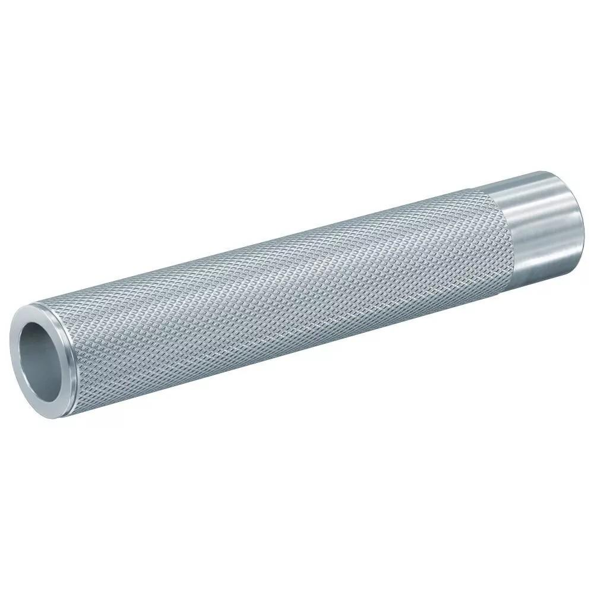

ДАМИР
ГРУПП
Главная
Каталог
Испытания
Контакты
Каталог
/
Принадлежности для химических анкеров
/
Втулка под химический анкер с внутренней резьбой A4 10х75

Втулка под химический анкер с внутренней резьбой A4 10х75
Раздел
Принадлежности для химических анкеров
Артикул (SKU)
TXR-d202a799061d9c
Цена
778.53 ₽
Запросить предложение
Для заказа и уточнения актуальной цены/наличия отправьте запрос на почту или позвоните +7 (495) 363-71-60.
Описание
Втулка под химический анкер с внутренней резьбой A4 10х75 ХАРАКТЕРИСТИКИ: Артикул: R-ITS-A4-10075 Базовая единица: шт Вид аксессуара: Стальная гильза
Другие товары раздела